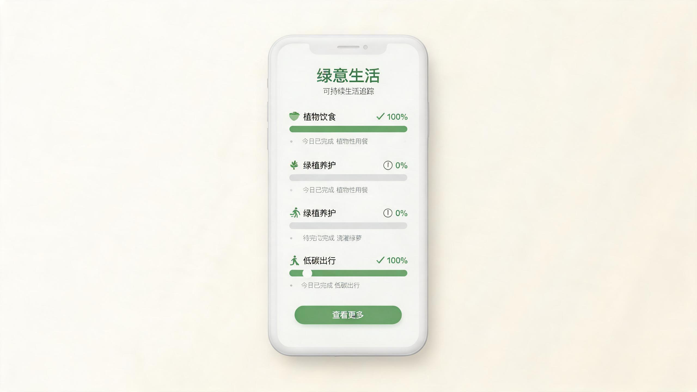

项目背景
绿意生活是一款面向年轻都市人群的可持续生活方式应用。用户可以通过记录日常低碳行为，如步行通勤、自带餐具、植物饮食等，逐步养成更环保的生活习惯。项目的核心挑战在于：如何让环保这件看似沉重的话题，变得轻松、愉悦且可持续。
设计思路
设计之初，我希望通过视觉语言传递“温和而坚定”的品牌气质。整体采用低饱和度的鼠尾草绿与暖白色为主调，避免使用高饱和色彩带来的焦虑感。界面中大量运用圆角、留白与柔和的图标，让用户在记录行为时感受到被鼓励，而非被评判。
在信息架构上，我将首页设计为“今日进度”视图，让用户一眼看到当天的完成情况与下一项可完成任务。通过轻量化的游戏化机制，如连续打卡、成就徽章与周度回顾，帮助用户建立长期的行为惯性。
设计过程
项目共经历四个阶段：用户调研、概念验证、高保真设计与可用性测试。调研阶段访谈了 24 位潜在用户，发现大多数人并非不愿意环保，而是缺乏简单、低门槛的记录工具。基于这一洞察，我简化了行为记录的步骤，将单次记录控制在 3 秒以内。
在高保真阶段，我建立了完整的组件库与设计令牌，确保后续迭代的一致性。可用性测试覆盖 12 位用户，任务完成率达到 94%，首页行为记录的感知易用性评分提升了 37%。